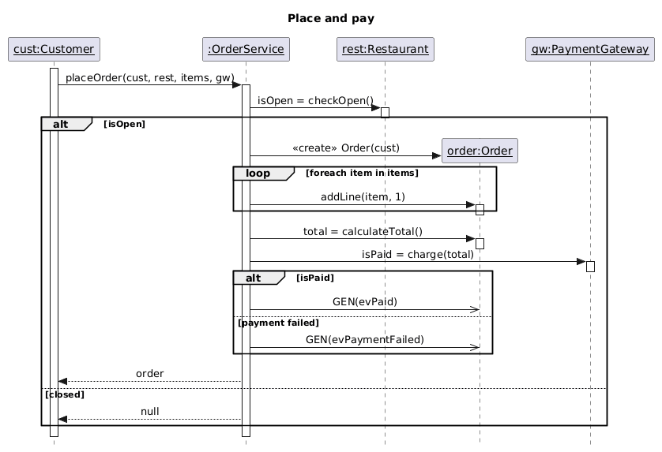
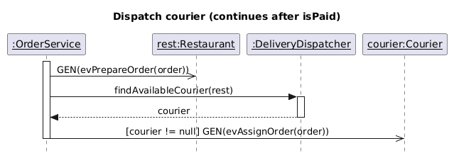

Lec01) to Dynamic Behavior (Lec02)

:OrderService right after [isPaid] is true.GEN(evPrepareOrder(order)) to rest:Restaurant without blocking.findAvailableCourier(rest) on :DeliveryDispatcher and waits for the courier object to return.[courier != null] directly on the arrow before firing GEN(evAssignOrder(order)).[instanceName]:[ClassName]cust:Customer, rest:Restaurant, order:Order, gw:PaymentGateway, courier:Courier.:[ClassName]): :OrderService, :DeliveryDispatcher.rest:Restaurant and order:Order:checkOpen(), addLine()) trigger an activation box; asynchronous events (GEN(...)) simply land on the lifeline (queued)!| Arrow Style | UML Name | Where in Our Diagrams | Runtime Meaning (Slides 11–14, 28) |
|---|---|---|---|
Solid Line + Filled Triangle────▶ |
Synchronous Message (קריאה למתודה סינכרונית) |
• placeOrder(cust, rest, items, gw)• isOpen = checkOpen()• addLine(item, 1)• total = calculateTotal()• isPaid = charge(total)• findAvailableCourier(rest)
|
Nested flow of control (Blocking). Control transfers immediately to the called method. The caller waits until the method finishes before moving to the next line of code. |
Solid Line + Open Arrowhead────> |
Asynchronous Event (שליחת אירוע אסינכרוני) |
• GEN(evPaid)• GEN(evPaymentFailed)• GEN(evPrepareOrder(order))• GEN(evAssignOrder(order))
|
Independent flow of control ("Fire & Forget"). Event enters the target object's event queue and is handled when ready. Caller does NOT wait, and there is NO return value! |
Dashed Line + Arrowhead<- - - - |
Return Value (ערך מוחזר) |
• Inline style: isPaid = charge(total)• Dashed arrow style: order, null (Diagram 1) & courier (Diagram 2)
|
Slide 12 Rule: We can either write the return value inline on the call (total = calculateTotal()) OR draw a dashed return arrow when returning at the end of a block or passing the result to the next step (courier). |
<<create>>) & Destructionorder:Order box floating in the middle of Diagram 1 instead of at the top?cust:Customer, :OrderService, rest:Restaurant, and gw:PaymentGateway already exist in RAM before placeOrder() is called, so their boxes sit at the very top of the Y-axis (Time = 0).<<create>> Order(cust) — Slide 15):
order:Order does not exist when the scenario starts!checkOpen() returns true (inside the [isOpen] branch) does :OrderService call the constructor <<create>> Order(cust).order:Order box, and its lifeline begins at that exact moment in time!<<destroy>> — Slide 15 Note):
<<destroy>> message (ending its lifeline with a big X).delete without GC) is a critical requirement. Instead, in Java we send GEN(evPaymentFailed) so Order transitions to a cancelled/terminated state!opt, alt & loop| Construct | UML Syntax | Where in Our Diagrams | When to Use It (Slides 16–20) |
|---|---|---|---|
| Single-Message Guard (Slide 16) |
[condition] msg()(No frame box!) |
Diagram 2:[courier != null] GEN(evAssignOrder(order)) |
When only 1 message is conditional. Just write [expression] before the method name — no box needed! |
opt Fragment(Slide 17) |
Frame labeled opt with [condition] |
Concept check: If Diagram 1 didn't return null when closed, the outer box would be opt [isOpen]! |
Conditional code (if without an else) that spans more than one method call. |
alt Fragment(Slide 18) |
Frame labeled alt split by a horizontal dashed line |
Diagram 1: • Outer alt: [isOpen] vs. [closed]• Inner alt: [isPaid] vs. [payment failed] |
Mutually exclusive if / else branches. Only one section executes depending on the guard condition. |
loop Fragment(Slides 19–20) |
Frame labeled loop with [foreach ...] or [while ...] |
Diagram 1:loop [foreach item in items] → addLine(item, 1) |
Repeated execution. (Note: If a loop has only 1 call, Slide 19 also allows writing [foreach item] addLine(item) directly on the arrow!) |
A sends message foo() to Lifeline B (A → B : foo()), then the method +foo() MUST exist inside Class B (not Class A!).
service → rest : checkOpen() ⇒ checkOpen() is a method inside Restaurant.service → order : addLine(item, 1) ⇒ addLine() is a method inside Order.service → gw : charge(total) ⇒ charge() is a method inside PaymentGateway.A to B requires a link between A and B in the Class Diagram!
:OrderService call rest, gw, and order? Because they were passed as parameters / created locally (Dependency ..> in our Class Diagram!).:OrderService call :DeliveryDispatcher in Diagram 2? Because OrderService has a Directed Association (──> itsDispatcher) to DeliveryDispatcher!GEN(evPaid) and GEN(evPaymentFailed) to order:Order. How does the Order object react when those events arrive in its queue? That is defined by its Statechart!